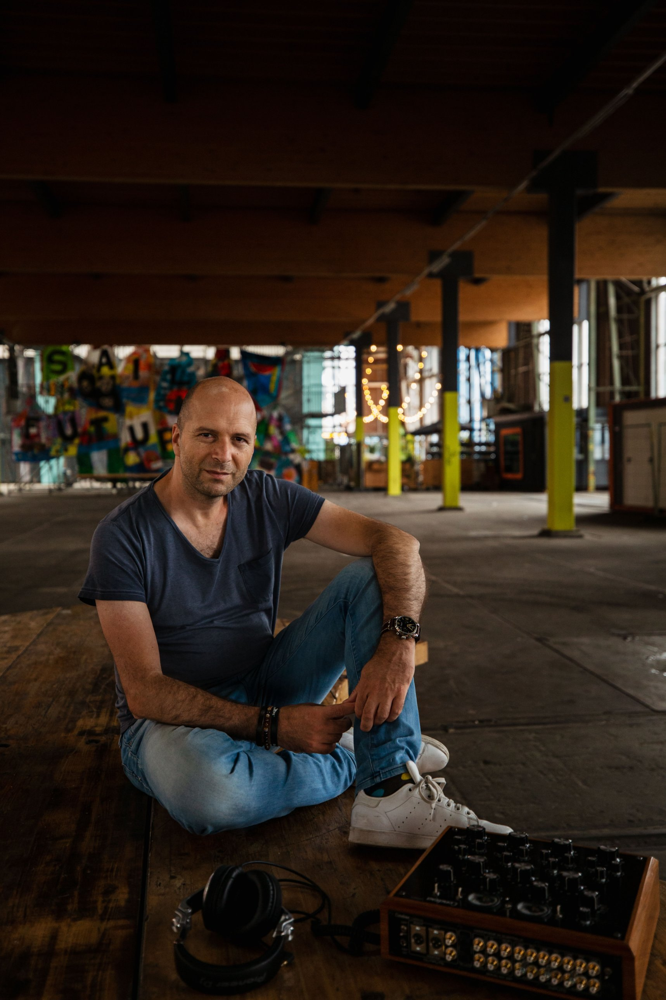

Founder story
OVER HEAR

- Oprichter
- Maarten Versteeg, dj en communicatieadviseur
maarten@hear.nl - Techniek
- Diverse freelance technici
- Partners en leveranciers
- Output Professional, Highlite, Moonbears, Chauvet Benelux, RCF, Brooklyn Audio, Architects in Music, AIMM Entertainment, Base Events, Biezema AV, Luxonos, Brandon AV, Deep Radio, Ronald Pronk Photography en anderen
Ik ben Maarten. Sinds 1993 draai ik als dj in bars, clubs, rooftopbars en beachclubs, en op corporate events van modeshow tot productlancering. Soms ook in het buitenland. Daardoor heb ik veel verschillende ruimtes en licht- en geluidssystemen leren kennen. Soms klinkt het geweldig. Soms hoor je wat er nog mogelijk is.
Daarnaast werk ik zo’n 25 jaar als communicatieadviseur voor grote organisaties. Ik weet dus ook hoe spannend een merkactivatie, productlancering of personeelsevent is voor een opdrachtgever.
Uit die combinatie is HEAR ontstaan. Ik begin bij wat een klant, bureau of artiest voor ogen heeft en zoek daar het geluid en het licht bij. Als dj hoor ik wat een ruimte nodig heeft. Als adviseur begrijp ik wat de opdrachtgever wil bereiken.
Social media veranderen muziek en het dj-vak. Events worden groter en soms lijkt de show belangrijker dan de artiest. Bij HEAR staan licht en geluid in dienst van de artiest, met kleurrijke en creatieve lichtshows die de muziek en atmosfeer versterken.
Dat doe ik bij kleine tot middelgrote events: van 150 tot 1.500 personen, in venues tot 40 meter diep. Ik werk daarbij samen met een netwerk van ervaren freelance professionals.
Daarnaast help ik venue-eigenaren hun ruimte om te bouwen tot een dansvloer voor een eenmalig event. Of ik adviseer ze hoe ze zelf hun licht en geluid kunnen inkopen: wat heeft de ruimte nodig, wat is er mogelijk en hoe zorg je dat het goed werkt, weinig onderhoud vraagt en lang meegaat? Daarbij breng ik ze in contact met de juiste leveranciers.
De naam HEAR heeft twee betekenissen. Allereerst staat het voor High End Audio Rental. Ik werk met merken waarvan de makers passie hebben voor hun vak. Zoals bij een goed Italiaans maatpak: het hoeft geen aandacht te trekken, maar de kenner ziet de snit, materialen en afwerking.
Ik probeer continu nieuwe merken en producten uit. Ik vind het heel leuk om een band op te bouwen met Europese licht- en geluidsfabrikanten en samen te werken met professionals uit het vak. Daar leer ik veel van. Het maakt je ook bescheiden: hoe meer je leert van echte vakidioten, hoe meer je merkt wat je nog niet weet.
Daarnaast staat HEAR voor ‘kiezen op gehoor’. Een rider-friendly assortiment is commercieel gezien natuurlijk belangrijk, maar eigen smaak ook. Daarin ben ik een tikje eigenwijs. Wat bij HEAR in de flightcase gaat, moet passen bij de artiest en de avond. Het moet iets zijn waar ik zelf met overtuiging achter sta, gemaakt met vakmanschap, respect voor de cultuur en innovatie.
Kennismaken?
Stuur me een appje→